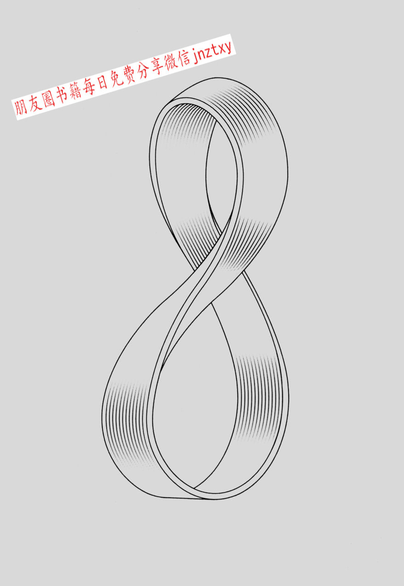

6 你生活在第四维空间吗
数学概念：克莱因瓶、几何学、拓扑学
克莱因瓶非常不可思议。解释得更清楚一点，要弄懂它，需要设想一个第四维空间———一个与我们的三维空间成直角的空间。克莱因瓶虽然奇怪，但或许蕴含着宇宙命运的奥秘。
克莱因瓶由德国数学家菲立克斯·克莱因于1882年提出，它最初的德语名称是KleinscheFlche（克莱因平面），但可能被误读成了KleinscheFlasche（克莱因瓶），总之，这个名称被沿用至今。克莱因瓶实际上是一个平面———一个二维流形，和球面一样，它也没有边界。同时，它也没有定向性，也就是说，沿着这个表面前进，方向是在不断变化的。
克莱因瓶之所以有名，还有另一层原因：它没有内部和外部之分，内部和外部合成了一个空间（类似第7章中的莫比乌斯带，只有一个面。事实上，要是将一个克莱因瓶切成两半，就会得到两条莫比乌斯带）。另一点值得注意的是，克莱因瓶无法在三维空间里表现出来。如果要用一张纸做出一个克莱因瓶，首先要将这张纸折成一个圆筒，然后将一端扭180°，而不是直接将两端粘在一起，形成一个圆环。要扭180°，就必须把这一端“上升”到第四维度。因为我们生活的世界是三维的，我们能做的就是把圆筒的一端穿过圆筒，与另一端粘在一起。最终的形状是相交的，而假如我们生活在四维空间里的话，克莱因瓶就不会相交。
要理解背后的原因，不妨假想你生活在一个二维空间里，这个空间有一条界线，就像一条二维的绳子。如果有人让你把这条界线折成8字形，但不能相交，你是不可能做到的。怎么可能呢？你必须把这条界线“上升”到三维空间，这样它才不会相交。
回到克莱因瓶与宇宙命运的关系。宇宙的未来，包括恒星、银河系和太空的命运，一部分取决于宇宙的整体形状。科学家根据他们的观察结果，提出了各种可能的形状，有些像一张平纸朝各个方向无限延展———被称为欧几里得3流形的三维空间；有些则是“封闭”的形状，也就是说，尽管无限广阔，但最终还是会相交（典型的例子是球面。从球面上的任意一点开始，沿着直线走，最终一定会回到起点）。但正如我们所知，宇宙的形状可能并不是这样的，就像我们生活在一个球体上，但周围环境给我们的直观感觉是，我们生活在一个无限广阔的平面上，我们在宇宙中的位置让我们觉得，宇宙就像直线一样朝各个方向延展，可事实上，从某个我们无法观察到的地方看，宇宙也许像一个车座或圆柱体，也可能会像一个克莱因瓶。
因此，如果你觉得第四维空间与我们的日常生活没有关系，不妨再想想。也许，你就生活在这样的空间里。
菲立克斯·克莱因
菲立克斯·克莱因，生于1849年，曾在德国哥廷根大学教授数学，对几何学有着浓厚的兴趣。他的妻子是伟大的哲学家格奥尔格·威廉·弗里德里希·黑格尔的孙女。
